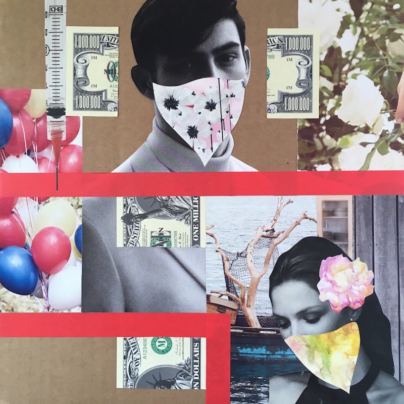
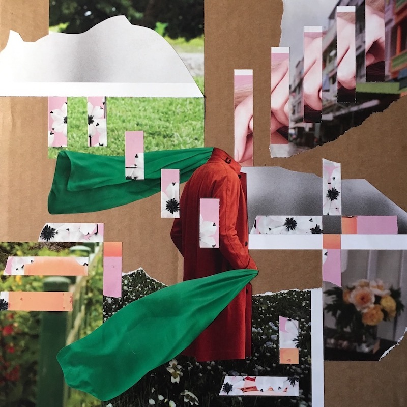

Kyle Brookes is from Massachusetts Sound/graphic/web design/post-production Emerson College, Boston, MA (expected 2019)
Live
Visual
Projects
Contact

Bonnie and Clyde, mixed media on 12x12" cardboard

Head in the Clouds, mixed media on 12x12" cardboard